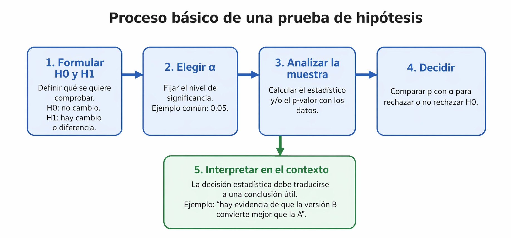

Una prueba de hipótesis es un procedimiento de la inferencia estadística que permite evaluar una afirmación sobre una población a partir de una muestra. En otras palabras, ayuda a decidir si los datos observados apoyan o no una idea inicial.
En un contexto web, por ejemplo, se puede querer comprobar si el tiempo promedio de carga de una página supera 3 segundos, si una campaña logra al menos 60 % de registros completados o si una versión nueva convierte mejor que una versión anterior. La prueba de hipótesis organiza ese proceso de decisión.
